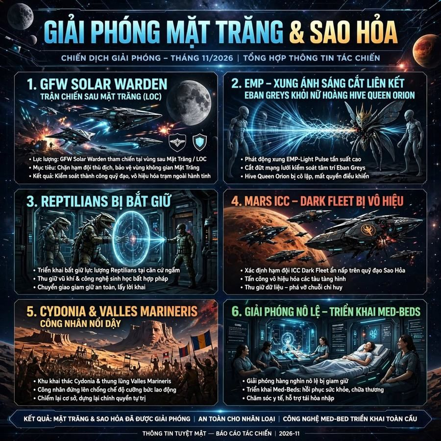
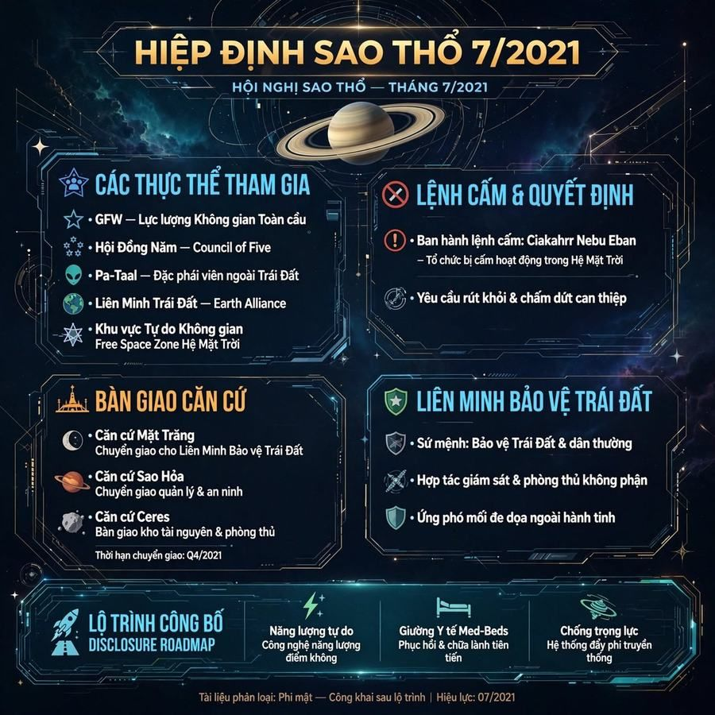

Trang chủ / Chuyên đề 2: Hành Trình Thiên Hà / Kỳ 19
Chuyên đề 2 · Kỳ 19 / 100
CHIẾN DỊCH GIẢI PHÓNG HỆ MẶT TRỜI CỦA LIÊN ĐOÀN THIÊN HÀ

Trong suốt 12.500 năm qua, Hệ Mặt Trời của chúng ta đã bị biến thành một "vùng không gian phong tỏa" — nơi các lực lượng tiêu cực ngoài hành tinh như Đế chế Bò sát Ciakahrr và Tập đoàn Xám Nebu hoành hành, thiết lập ma trận kiểm soát tâm trí và nô dịch sinh học đối với nhân loại Trái Đất.
Tuy nhiên, mọi triều đại độc tài trong vũ trụ đều có ngày sụp đổ. Một chiến dịch quân sự - tâm thức mang quy mô lớn nhất lịch sử dải Ngân Hà đã được khởi động và diễn ra âm thầm trong giai đoạn 2020–2022: Chiến dịch Giải phóng Toàn diện Hệ Mặt Trời (The Solar System Liberation Campaign)!
Hãy cùng khám phá bức tranh chiến trường không gian nghẹt thở, sự sụp đổ của các căn cứ tiêu cực từ Mặt Trăng, Sao Hỏa đến Sao Thổ, và Hiệp định Sao Thổ lịch sử đánh dấu sự chuyển giao quyền lực vũ trụ lại cho Nhân loại Trái Đất!
✦ ✦ ✦1. BỐI CẢNH CHIẾN LƯỢC: LUẬT THIÊN HÀ VÀ SỰ KÍCH HOẠT QUYỀN CAN THIỆP
Nhiều người thường đặt câu hỏi: Tại sao các nền văn minh tiến hóa cao lại không can thiệp sớm hơn để cứu giúp Trái Đất?
A. Chỉ thị Tối cao (The Prime Directive) & Bộ luật Thiên hà
Trong cộng đồng thiên hà, Chỉ thị Tối cao (Prime Directive) là quy tắc ứng xử thiêng liêng tuyệt đối: Nghiêm cấm các nền văn minh tiên tiến can thiệp vào sự phát triển tự nhiên của một chủng tộc đang tiến hóa (như con người Trái Đất), trừ khi chủng tộc đó bị can thiệp và thao túng tiêu cực từ bên ngoài.
- Sự vi phạm nghiêm trọng của Phe Tiêu cực: Phe Bò sát Ciakahrr và Tập đoàn Nebu đã vi phạm nghiêm trọng Bộ luật Thiên hà. Chúng không chỉ can thiệp trái phép vào mã gen 22 chủng tộc, mà còn thiết lập ma trận sóng giả lập, bắt cóc con người, xây dựng các căn cứ nô lệ sinh học và đưa công nghệ Trí tuệ Nhân tạo (AI) độc hại vào Hệ Mặt Trời.
- Tín hiệu cầu cứu từ Ý thức Tập thể Trái Đất: Khi tần số Trái Đất bắt đầu tăng lên và hàng triệu linh hồn Starseed đồng loạt phát ra nguyện vọng tự do, chỉ số tần số tâm thức tập thể của nhân loại đã vượt qua "ngưỡng kích hoạt". Điều này trao quyền hợp pháp cho Liên đoàn Thế giới Thiên hà (Galactic Federation of Worlds - GFW) tiến hành chiến dịch can thiệp quân sự giải phóng!
B. Sự phối hợp của ba Lực lượng Liên minh Vĩ đại
Chiến dịch giải phóng không được tiến hành bởi một nhóm đơn lẻ, mà là sự hợp tác quy mô chưa từng có của ba thế lực:
- Liên đoàn Thế giới Thiên hà (GFW): Cung cấp hạm đội tàu chiến không gian tối tân, công nghệ vô hiệu hóa sóng AI và các chỉ huy chiến thuật cấp cao.
- Liên minh Liên Thiên hà (Pa-Taal / Seeders): Cung cấp dải tần số bảo vệ siêu chiều và nguồn năng lượng ánh sáng kích hoạt mã gen.
- Liên minh Trái Đất (Earth Alliance & Solar Warden): Lực lượng kháng chiến nội bộ gồm các sĩ quan quân đội thức tỉnh, các chiến binh Hạm đội Solar Warden và các lực lượng mặt đất chuyên trách việc dọn dẹp các căn cứ DUMBs.

2. CHẶN 1: GIẢI PHÓNG CĂN CỨ MẶT TRĂNG (LUNA) & SỰ SỤP ĐỔ CỦA MA TRẬN 3D
Mặt Trăng chính là "nút thắt chiến lược" đầu tiên phải bị bẻ khóa. Nơi đây không chỉ chứa các căn cứ quân sự ngầm của phe Bò sát và người Xám Eban, mà còn là nơi đặt hệ thống máy tính phát sóng Ma trận 3D kiểm soát nhận thức con người.
A. Trận không chiến tàn khốc phía sau Mặt Trăng
Vào giai đoạn đầu năm 2021, các hạm đội tàu chiến của GFW kết hợp với Solar Warden đã tiến hành một cuộc tấn công bất ngờ và chớp nhoáng vào các căn cứ tiêu cực nằm ở nửa tối của Mặt Trăng (bao gồm cả căn cứ bị tha hóa LOC - Lunar Operations Command).
- Công nghệ ngắt kết nối sóng AI: GFW đã sử dụng các loại vũ khí xung từ trường tần số cao (EMP-Light Pulse) để cắt đứt liên kết giữa các cá thể người Xám Eban với Siêu máy tính Nữ hoàng Tổ ong (Hive Queen) tại chòm sao Orion. Khi mất liên kết AI, hàng vạn chiến binh người Xám lập tức rơi vào trạng thái tê liệt hoàn toàn.
- Quét sạch lực lượng Bò sát Ciakahrr: Các chiến binh GFW đã đột nhập vào các hầm ngầm sâu bên trong lòng Mặt Trăng, tiêu diệt và bắt giữ các chỉ huy Bò sát cao cấp, giải cứu hàng ngàn nạn nhân bị giam giữ trong các phòng thí nghiệm ngầm.
B. Thu hồi Trạm phát sóng Ma trận và Bàn giao Mặt Trăng
- Hệ thống máy tính phát sóng Ma trận 3D cổ xưa trên Mặt Trăng đã bị bẻ khóa và vô hiệu hóa các thuật toán thao túng tiêu cực.
- Mặt Trăng chính thức được quét sạch hoàn toàn bóng dáng của phe tiêu cực. Quyền quản lý các căn cứ trên Mặt Trăng sau đó đã được GFW bàn giao lại cho Liên minh Trái Đất (Hải quân & Lực lượng Không gian hòa bình) để cải tạo thành trạm quan sát và bảo vệ Trái Đất!

3. CHẶN 2: CHIẾN DỊCH GIẢI PHÓNG SAO HỎA (MARS LIBERATION) & SỰ SỤP ĐỔ CỦA ICC
Sau khi giải phóng Mặt Trăng, mục tiêu tiếp theo của chiến dịch là Sao Hỏa — trung tâm công nghiệp ngầm khổng lồ của Tập đoàn Công nghiệp Liên hành tinh (ICC) và Hạm đội Đen (Dark Fleet).
A. Cuộc nổi dậy của công nhân và sự bẻ khóa các đô thị ngầm
Sao Hỏa thời bấy giờ chứa hàng trăm nhà máy, xưởng đóng tàu không gian và thuộc địa khai thác khoáng sản vận hành bằng hàng trăm ngàn lao động nô lệ con người bị bắt cóc từ Trái Đất.
- Sự phối hợp từ bên trong: Liên minh SSP Alliance và GFW đã âm thầm chuyển giao các thiết bị liên lạc tần số cao và vũ khí năng lượng cho các phong trào kháng chiến ngầm của công nhân trên Sao Hỏa.
- Cuộc tổng tiến công: Khi hạm đội GFW tiến vào quỹ đạo Sao Hỏa và làm tê liệt dải lá chắn phòng thủ của ICC, một cuộc nổi dậy đồng loạt của các công nhân ngầm đã bùng nổ bên trong các đô thị dưới lòng đất Sao Hỏa (như Colony Cydonia và thuộc địa Valles Marineris).
B. Sự thoái lui của Hạm đội Đen và sự giải phóng Sao Hỏa
- Các chỉ huy cấp cao của Hạm đội Đen và ICC nhận thấy sự thất bại thảm hại đã hoảng loạn bỏ chạy khỏi Sao Hỏa, tìm cách trốn ra ngoài Hệ Mặt Trời nhưng hầu hết đã bị hạm đội tuần tra của GFW chặn bắt.
- Các nhà máy sản xuất vũ khí tiêu cực trên Sao Hỏa bị bãi bỏ. Hàng trăm ngàn con người bị giam giữ đã được giải thoát, nhận được sự chăm sóc y tế từ các buồng phục hồi Med-Beds và được đưa trở về Trái Đất hoặc di tản đến các thế giới hòa bình.
- Sao Hỏa chính thức được trao trả lại quyền tự quyết cho cư dân bản địa và Liên minh Trái Đất!
4. CHẶN 3: TRIỆT PHÁ CÁC TRẠM TIẾP VẬN VÀNH ĐAI TIỂU HÀNH TINH & SAO THỔ (SATURN)
Không dừng lại ở Sao Hỏa, chiến dịch quét sạch tiếp tục càn quét qua Vành đai Tiểu hành tinh và hệ thống các vệ tinh của Sao Thổ — những "thành trì cuối cùng" của phe tiêu cực.
A. Giải phóng Ceres & các Trạm tiếp vận ngầm
- Hành tinh lùn Ceres: Ceres từng là trung tâm buôn bán nô lệ sinh học và chợ đen giao thương lớn nhất của Hạm đội Đen với các chủng tộc Bò sát ngoài thiên hà. Một đợt càn quét quy mô lớn của GFW đã đập tan toàn bộ tổ hợp tội phạm này, giải phóng hàng ngàn sinh mệnh từ nhiều hệ sao.
B. Giải phóng Sao Thổ & Sự sụp đổ của Cổng xoáy Tiêu cực
Sao Thổ (Saturn) và vệ tinh Titan từ lâu đã bị phe tiêu cực lợi dụng để phát ra dải sóng âm tần số thấp, kết hợp với Mặt Trăng để củng cố cái bẫy tái sinh (Reincarnation Trap) và thao túng năng lượng luân xa của con người.
- Trận chiến tại vành đai Sao Thổ: Hạm đội GFW đã phá hủy các trạm chuyển tiếp sóng âm tiêu cực giấu bên trong các vành đai băng của Sao Thổ.
- Giải phóng Cổng Sao Thổ (Saturn Stargate): Cổng xoáy liên chiều tại Sao Thổ — vốn bị phe Bò sát chiếm giữ để vận chuyển quân đội và tài nguyên bị đánh cắp — đã được thu hồi và đưa trở lại sự kiểm soát của Hội đồng Thiên hà.
5. HIỆP ĐỊNH SAO THỔ (THE SATURN AGREEMENTS - 2021): CHUYỂN GIAO QUYỀN LỰC VŨ TRỤ
Vào tháng 7 năm 2021, một sự kiện mang tính lịch sử vĩ đại nhất trong hàng ngàn năm qua đã diễn ra tại quỹ đạo Sao Thổ: Hội nghị Thượng đỉnh Sao Thổ (The Saturn Conference & Agreements).
A. Thành phần tham dự Hội nghị
- Về phía Thiên hà: Đại diện cấp cao của Liên đoàn Thế giới Thiên hà (GFW), Hội đồng Năm người, và Liên minh Liên Thiên hà Pa-Taal.
- Về phía Trái Đất: Đại diện của Liên minh Trái Đất (bao gồm các tư lệnh Hải quân, Lực lượng Không gian hòa bình và các nhà khoa học chân chính đại diện cho nhân loại Trái Đất).
B. Các điều khoản cốt lõi của Hiệp định Sao Thổ:
- Tuyên bố Tự do cho Hệ Mặt Trời: Hệ Mặt Trời chính thức được tuyên bố là "Vùng không gian Tự do" (Free Space Zone). Toàn bộ các chủng tộc tiêu cực (Ciakahrr, Nebu, Eban) vĩnh viễn bị cấm bước chân vào khu vực này.
- Bàn giao Toàn bộ Hạ tầng Không gian: Toàn bộ các căn cứ, trạm không gian, nhà máy và công nghệ thu hồi tại Mặt Trăng, Sao Hỏa, Ceres và các vệ tinh chính thức được chuyển giao lại cho Liên minh Trái Đất quản lý.
- Thành lập Liên minh Phòng thủ Trái Đất (Earth Protection Alliance): Nhân loại Trái Đất được công nhận là "Chủ nhân hợp pháp" của Hệ Mặt Trời, có trách nhiệm tự xây dựng hệ thống phòng thủ và phát triển nền văn minh theo hướng hòa bình.
- Lộ trình Giải mật Công nghệ (Disclosure Roadmap): Các công nghệ bị che giấu suốt hàng trăm năm (năng lượng miễn phí, buồng chữa lành Med-Beds, du hành chống trọng lực) phải được từng bước giải mật và trao trả cho toàn thể công chúng Trái Đất!
6. SỰ HOẢNG LOẠN VÀ SỤP ĐỔ CỦA PHE KIỂM SOÁT NGẦM (DEEP STATE / CABAL) TRÊN BỀ MẶT TRÁI ĐẤT
Việc toàn bộ các lực lượng Bò sát và Xám tiêu cực bị đánh tan khỏi Hệ Mặt Trời đã tạo ra một đợt "sóng thần hoảng loạn" đánh thẳng vào phe bóng tối bề mặt Trái Đất (Deep State / Cabal).
A. Sự cắt đứt nguồn hỗ trợ từ ngoài hành tinh
- Phe Cabal trên Trái Đất mất đi hoàn toàn "nhà tài trợ công nghệ" và sự bảo vệ từ các chủ nhân ngoài hành tinh của chúng.
- Các siêu máy tính dự đoán AI mà chúng dùng để thao túng thị trường tài chính và chính trị Trái Đất bị mất kết nối mạng lưới tổ ong Nebu, khiến mọi kịch bản thao túng của chúng liên tục bị rối loạn và thất bại.
B. Sự dọn dẹp các căn cứ DUMBs cuối cùng
Trong suốt giai đoạn 2021–2023, các lực lượng đặc nhiệm của Liên minh Trái Đất đã tiến hành các chiến dịch ngầm quy mô lớn:
- Đánh sập các căn cứ DUMBs còn lại bên dưới Bắc Mỹ, Châu Âu, Châu Á và Nam Cực.
- Giải cứu hàng chục ngàn trẻ em và nạn nhân bị giam giữ trong các hầm ngầm.
- Tịch thu toàn bộ kho báu tài chính bị đánh cắp và các công nghệ ngụy trang để chuẩn bị cho sự sụp đổ của hệ thống tiền tệ nợ nần cũ!
7. BÀI HỌC VÀ Ý NGHĨA VĨ ĐẠI: BẠN CHÍNH LÀ NGƯỜI GIẢI PHÓNG
Chiến dịch giải phóng Hệ Mặt Trời không phải là một cuốn phim khoa học viễn tưởng để chúng ta đứng xem như những khán giả thụ động.
- Chiến thắng của Tần số Tâm thức: Liên đoàn Thiên hà không thể chiến thắng nếu như chính hàng triệu con người trên Trái Đất không liên tục phát ra tần số khát khao tự do, sự thấu cảm và tình yêu thương.
- Sự tự chủ của Nhân loại: Vũ trụ đã dọn dẹp các chướng ngại vật ngoài không gian, nhưng nhiệm vụ tái thiết Trái Đất và bẻ khóa ma trận tâm trí nội tại thuộc về chính mỗi chúng ta!
Khi bạn từ bỏ sự sợ hãi, từ bỏ sự chia rẽ và sống trong tình yêu thương vô điều kiện, bạn đang đóng góp trực tiếp vào chiến thắng vĩ đại của toàn thể Thiên hà!
✦ ✦ ✦Khi Hệ Mặt Trời đã được giải phóng và Ma trận 3D đang tự sụp đổ, lộ trình tiến lên dải tần số 5D và Kỷ nguyên hội nhập Thiên hà của Nhân loại sẽ diễn ra như thế nào? ✦